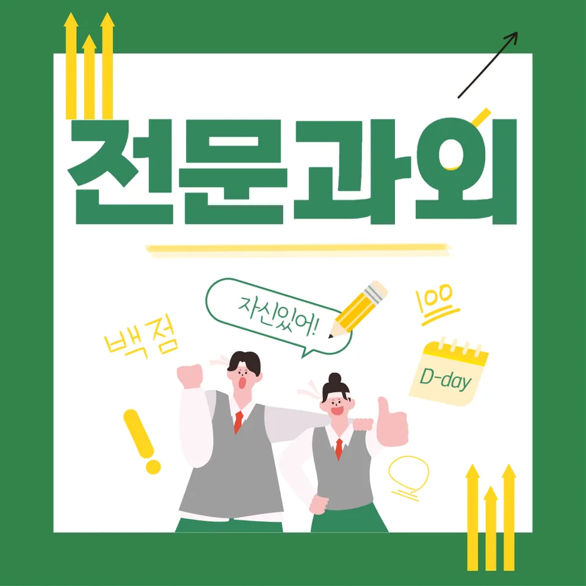

PageType : DONG
URL : /경기도과외/부천시과외/원미구과외/역곡동과외/
지역 학습환경과 학생들의 변화
역곡동과외를 시작한 학생들은 같은 교실 안에서도 ‘집중이 되는 순간’이 달라집니다. 어떤 학생은 숙제만 밀렸고, 또 다른 학생은 수업을 듣는 동안은 멀쩡했지만 복습이 비어 있었습니다. 역곡동 학습환경은 학원·스터디 분위기가 분산되어 있는 편이라, 학교 일정이 흔들릴 때 공부 리듬도 함께 끊기는 일이 자주 보입니다. 그래서 역곡동과외에서는 먼저 생활 패턴을 관찰해, 등교 전 준비 시간과 하교 후 첫 30분의 사용처를 고정합니다. 그 결과 학생들은 ‘시작이 늦는 날’이 줄고, 내신 과목을 보기 전에 기본 개념을 펼쳐 보는 습관이 생깁니다. 특히 국어·영어처럼 매일 짧게 다져야 하는 과목에서 변화가 빠르게 나타납니다.
지역의 특성상 주말 이동이 잦은 학생도 많아, 하루에 몰아서 하는 방식은 금방 한계에 닿습니다. 역곡동과외에서는 시험 전 장을 길게 늘리기보다, 주간 단위로 반복되는 체크를 설계합니다. 학생이 스스로 ‘이번 주에 무엇을 끝낼지’를 말할 수 있을 때 성취감이 붙고, 공부습관이 자연스럽게 안정됩니다. 이 과정에서 학습 태도도 함께 달라져, 이해가 안 되는 단원을 발견하면 멈추지 않고 질문으로 전환합니다.
학부모가 많이 고민하는 부분
역곡동과외를 찾는 학부모들은 대체로 ‘불안의 형태’가 비슷합니다. 성적이 떨어졌다는 말보다, 과정을 못 믿겠다는 걱정이 먼저 나오기도 합니다. 숙제는 하는데 결과가 없고, 문제집은 푸는데 틀린 이유를 설명하지 못한다는 이야기가 많습니다. 이런 경우 학부모가 무엇을 봐야 하는지부터 정리해 드립니다. 단순히 정답 여부가 아니라, 학생이 왜 틀렸는지·어떤 단계에서 막혔는지·다음엔 어떤 순서로 접근할지까지 확인하도록 돕습니다.
또 다른 고민은 시간관리입니다. 특히 중등으로 갈수록 ‘공부할 시간은 있는데 효율이 낮다’는 목소리가 커집니다. 역곡동과외에서는 학생의 실제 하루 루트를 바탕으로, 과목별로 필요한 집중 구간을 나눕니다. 이때 학부모는 매일 긴 상담을 하지 않아도 됩니다. 대신 짧은 주간 요약과 체크 항목을 공유하며 내신 전략을 같이 맞춥니다. 결국 학부모의 불안이 정보 부족에서 출발했다는 걸 확인하고, 내신 준비 흐름이 한 단계 정돈됩니다.
학년이 올라갈수록 달라지는 공부
초기에는 ‘문제 풀이 양’보다 공부습관의 바닥을 다지는 일이 중요합니다. 1~2학년대에는 개념 정리와 기본 서술 방식이 성적을 가릅니다. 그런데 학년이 올라가면 같은 방식이 통하지 않기 시작합니다. 3학년이 다가올수록 문제 유형이 촘촘해지고, 시험은 빠르게 읽고 정확히 판단하는 능력을 요구합니다. 역곡동과외에서는 학년별로 과목의 우선순위를 바꿉니다. 예를 들어 중간·기말이 가까워지면 국어는 문학 서술과 비문학 요지를, 수학은 유형별 실수와 계산 시간을 집중합니다.
학생도 변합니다. 학년이 높아질수록 “왜 해야 하는지”를 이해해야 공부가 오래 갑니다. 그래서 공부 계획을 ‘누가 시키는 일정’이 아니라 ‘내가 성적을 끌어올리는 이유’로 설명합니다. 시험기간에는 단원 전체를 한 번에 끝내려는 시도를 줄이고, 약점이 반복되는 구간만 골라 회전율을 높입니다. 이런 변화가 누적되면 학생이 스스로 시험 공부 흐름을 설계하기 시작합니다.
학교생활과 내신 준비
내신은 시험지만 보는 게 아니라, 수업에서 놓친 부분이 문제지로 바뀌는 구조입니다. 역곡동과외에서는 학교생활을 공부의 시작점으로 삼습니다. 수업 중 필기 방식이 정리되지 않은 학생은 복습에서 흔들리고, 수업 참여는 좋지만 복습이 없으면 점수가 천천히 무너집니다. 그래서 학생이 수업 이후에 무엇을 확인했는지부터 잡습니다. “오늘 배운 내용을 말로 바꿔보기” 같은 간단한 행동을 통해, 내신 과목에서 자주 나오는 포인트를 체계화합니다.
내신 준비는 오답 관리에서 완성됩니다. 틀린 문제를 다시 푸는 것만으로는 부족하고, 같은 이유로 틀리지 않게 만드는 문장과 기준이 있어야 합니다. 역곡동과외에서는 오답을 단순 정리로 끝내지 않고, 다음 시험에서 어떤 단계를 통과해야 하는지 연결합니다. 시험 전에는 학교에서 배운 범위와 학교별 스타일을 반영해 공부 계획을 미세 조정합니다. 이때 학습 태도도 바뀌어, 학생이 시험을 두려워하기보다 준비 과정을 신뢰하게 됩니다.
자기주도학습이 중요한 이유
자기주도학습은 ‘공부를 혼자 하는 능력’이 아니라 ‘공부를 계속 유지하는 장치’입니다. 역곡동과외는 의존도를 낮추는 방향으로 진행됩니다. 처음에는 가이드가 필요하지만, 시간이 지나면 학생이 스스로 오늘의 우선순위를 정하고, 다음 행동을 선택하게 됩니다. 예를 들어 숙제량이 많을 때도 순서를 바꿔 풀 수 있고, 이해가 안 되는 단원이 생기면 바로 회피하지 않고 최소 확인 질문을 먼저 던집니다. 이런 과정이 쌓이면 공부습관이 스스로 굴러가며 끊김이 줄어듭니다.
또한 자기주도학습은 시간관리와 직결됩니다. 일정이 바뀌는 날이 있어도, 학생은 고정 루틴을 유지합니다. ‘완료해야 할 체크리스트’가 있기 때문입니다. 역곡동과외에서는 체크 기준을 단순히 분량으로 두지 않습니다. 문제 유형별 목표, 서술 단계별 목표, 개념 확인 목표로 나누어 학생이 무엇을 했는지 스스로 설명할 수 있게 합니다. 결과적으로 내신 준비가 계획대로 진행되고, 시험이 닥쳐도 공부가 무너지지 않습니다.
공부 습관이 성적에 미치는 영향
성적은 순간 실력이 아니라 습관의 누적 결과입니다. 역곡동과외에서 관찰되는 대표 변화는 ‘오답이 줄어드는 방식’입니다. 어떤 학생은 틀린 문제를 맞히는 데 집착하지만, 실제로는 같은 실수의 패턴을 끊는 연습이 필요합니다. 그래서 공부습관을 점검합니다. 예컨대 문제를 풀기 전 조건을 제대로 읽는지, 계산을 끝까지 확인하는지, 서술형에서는 요구하는 요소를 빠뜨리지 않는지 확인합니다.
학습 태도는 성적 그래프와 함께 움직입니다. 수업 이후에 10분이라도 복습이 있는 학생은 개념이 다음 단원으로 넘어갈 때 흔들림이 덜합니다. 반대로 복습이 비어 있으면 시험 전 몰아가기가 반복되고, 결국 시험기간 집중이 흐트러집니다. 역곡동과외는 이런 반복을 끊기 위해 매일의 학습을 짧게라도 ‘연결’시키는 방식으로 설계합니다. 그 결과 학생은 공부가 힘들더라도 방향을 잃지 않고, 성적이 서서히 안정됩니다.
체크해야 할 학습 포인트
- 수업 후 24시간 내 개념 확인 시간을 고정했는지
- 오답을 이유까지 정리했는지(단순 정답 기록 금지)
- 시험기간에 단원 전체를 무리하게 늘리지 않고 약점 회전율을 올렸는지
- 과목별 집중 시간과 휴식 구간을 시간관리로 분리했는지
이 네 가지가 맞물리면 역곡동과외의 목표는 훨씬 빨리 보입니다. 학생이 계획을 지키는 것을 넘어, 왜 지켜야 하는지까지 이해하게 되기 때문입니다. 결국 공부 계획이 부담이 아니라 행동이 됩니다.
역곡동과외로 만드는 맞춤 학습 루틴
역곡동과외의 루틴은 ‘모든 학생에게 같은 방식’이 아닙니다. 성적이 흔들리는 학생은 보통 시작이 늦거나 중간에 흐름이 끊기는 경우가 많습니다. 그래서 첫 단계는 짧게, 두 번째 단계는 정확히, 마지막 단계는 복습으로 마무리하도록 설계합니다. 학생이 매번 바꿔야 하는 일정표가 아니라, 한 번 만들면 계속 쓸 수 있는 틀을 갖게 하는 것이 핵심입니다.
특히 과목 선택에서 현실적인 고민을 돕습니다. 어느 과목을 더 해야 점수가 빨리 오르는지, 단원이 바뀔 때 우선순위가 어떻게 바뀌는지 학생이 알게 됩니다. 영어와 수학처럼 누적되는 과목은 주간 반복이 중요하고, 국어는 서술 방식과 근거 찾기 훈련이 필요합니다. 이런 방향이 정해지면 시험을 앞두고도 학생이 불필요하게 흔들리지 않고, 학습이 일정하게 이어집니다.
자주 묻는 질문
역곡동과외는 어떤 학생에게 가장 도움이 되나요?
기본 개념은 알지만 시험에서 점수가 흔들리는 학생, 숙제를 해도 내신으로 연결이 안 되는 학생, 자기주도학습이 잘 붙지 않아 시간관리부터 다시 잡아야 하는 학생에게 특히 효과가 큽니다.
내신 준비는 시험 전 언제부터 어떻게 시작하나요?
시험기간에 몰아가기보다 학교 수업과 연결해 주간 단위로 준비합니다. 역곡동과외에서는 범위-유형-오답 기준을 먼저 세우고, 약점 회전율이 올라가도록 조정합니다.
공부습관을 바꾸는 과정에서 학부모는 무엇을 도와주면 좋나요?
정답을 확인하는 것보다 학생이 말로 설명할 수 있게 질문을 정리해 주는 편이 좋습니다. 역곡동과외에서 공유하는 체크 포인트대로 주간 피드백을 간단히만 해도 충분합니다.
자기주도학습이 안 되는 학생도 가능한가요?
가능합니다. 처음부터 혼자 시키기보다 루틴과 체크리스트를 만들어 지속 장치를 먼저 제공합니다. 시간이 지나면 학생이 스스로 우선순위를 정하는 단계로 넘어갑니다.
과목 선택이나 학습 계획은 어떻게 세우나요?
학교생활에서의 수업 이해도, 최근 시험 오답 패턴, 시간관리 가능한 루트를 함께 보고 설정합니다. 역곡동과외에서는 내신에 직접 영향을 주는 단원과 유형을 기준으로 공부 계획을 정교하게 조정합니다.
